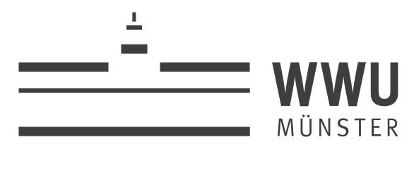

{% extends 'layout_LADM.html'%}

{% block body %}
<h3> HI </h3>

<body id="body">

<div id="header_div" class="container">
    <br>  
    <div class="panel-header text-center">
        <h2>
            <b><font color="white">its4land: "Draw and Make"</font></b>
        </h2>
        <h3>
            <font color="white">A tool that converts hand drawn sketches
                into computer-ready boundary maps</font>
        </h3>
    </div>
</div>
<div>
    <br>
</div>

<div id="buttons">
    <div id="button_div" class="container" align=center>
        <button id="processSketchMap" type="button" class="btn btn-primary btn-arrow-right " disabled="true"
                onclick="ProcessSketchMap()"><span class="badge badge-inverse"> 1 </span> <span>  </span> Process
            Sketch Map <span>  </span></button>
        <button id="qualify_SM" type="button" class="btn btn-primary btn-arrow-right" disabled="true"
                onclick="qualify_SM()"><span class="badge badge-inverse"> 2 </span><span>  </span> Qualify
            Sketch Map
        </button>
        <button id="qualify_MM" type="button" class="btn btn-primary btn-arrow-right" disabled="true"
                onclick="qualify_MM()"><span class="badge badge-inverse"> 3 </span> <span>  </span> Qualify
            Base Map
        </button>
        <button id="align_Maps" type="button" class="btn btn-primary btn-arrow-right" disabled="true"
                onclick="align_Maps()"><span class="badge badge-inverse"> 4 </span> <span>  </span> Map
            Alignment
        </button>
    </div>
</div>

<div id=main>
    <div id="main_div" class="container-fluid">
        <div class="table" id="table-intro">
            <table id="main_body" class="table">
                <tbody>
                <tr>
                    <th><h5>
                        <font face="Courier New"><b>Hand Drawn Map</b></font>
                    </h5></th>
                    <th><h5>
                        <font face="Courier New"><b>Geo-referenced Map</b></font>
                    </h5></th>
                </tr>
                <tr>
                    <td id="LoadedSketchMap">
                        <div id="loadMapThumbnail1" class="loadMapThumbnail">
                            <label> <input id="LADM_SketchMapInputbutton" type="file"
                                           style="display: none;" onChange="loadSketchMap()"/><span
                                    class="badge badge-inverse" id="span_sm1">load sketch </span>
                                
                            </label>
                        </div>
                    </td>
                    <td id="LoadedBaseMap">
                        <div id="loadMapThumbnail" class="loadMapThumbnail">
                            <label> <input id="MetrichMapInputbutton" type="file"
                                           style="display: none;" onChange="loadMetricMap()" multiple><span
                                    class="badge badge-inverse" id="span_mm">load base Map</span>
                                
                            </label>
                        </div>
                    </td>
                </tr>


                <tr>
                    <td id="sketchMapHolder" align="center">
                        <div id="LADM_sketchmapplaceholder" align=center></div>
                    </td>

                    <td id="baseMapHolder" align="center">
                        <div id="metricmapplaceholder" align=center></div>
                    </td>
                </tr>
                </tbody>
            </table>
        </div>
    </div>
</div>
<div id="footer">
    <div class="container">
        <div class="panel-footer text-center">
            <a href="https://its4land.com" target="_blank">its4land</a> | <a
                href="https://ifgi.uni-muenster.de" target="_blank">Institute
            for Geoinformatics, Munster</a> | <a
                href="https://www.uni-muenster.de/Geoinformatics/en/sil/index.html"
                rel="nofollow">Spatial Intelligence Lab Munster</a>
        </div>
    </div>
</div>
</body>
{% endblock%}